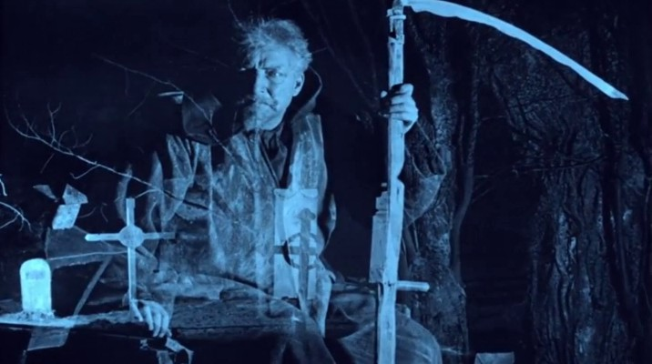

The Phantom Carriage, frame at 30:14
Victor Sjöström · 1921 · Silent film, tinted in this copy (frame)
Free to use
Victor Sjöström wrote the script in eight days, and in April 1920 he read and performed the whole of it to Selma Lagerlöf at her house, Mårbacka. After two hours she offered him dinner, which he took as approval. The film was shot from May to July 1920 in the new Filmstaden studios in Solna, and it was released on New Year's Day 1921.
Open in The ArtchiveFull-size file ↗
More like this


More by Victor Sjöström